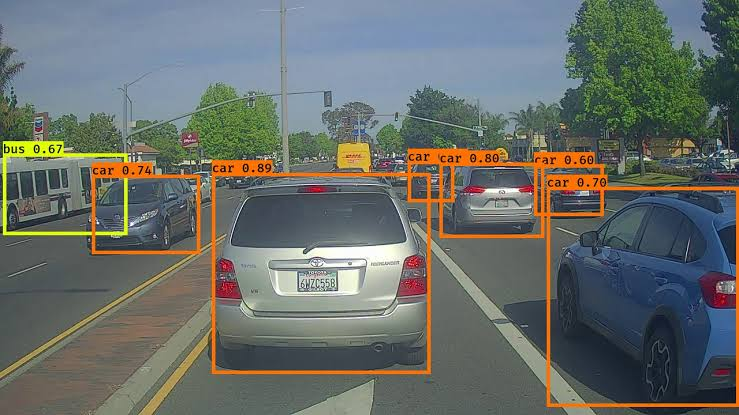

YOLO architecture
In this project we implement YOLO algorithm to perform Autonomous Driving - Car Detection(references are linked below). We perform car and pedestrian detection and localisation both. YOLO is a state-of-the-art object detection model that is fast and accurate. It runs an input image through a CNN, which outputs a 19x19x5x85 dimensional volume. The encoding can be seen as a grid where each of the 19x19 cells contains information about 5 boxes. You filter through all the boxes using non-max suppression. Specifically: Score thresholding on the probability of detecting a class to keep only accurate (high probability) boxes. Intersection over Union (IoU) thresholding to eliminate overlapping boxes Because training a YOLO model from randomly initialized weights is non-trivial and requires a large dataset as well as lot of computation, previously trained model parameters were used in this exercise. If you wish, you can also try fine-tuning the YOLO model with your own dataset, though this would be a fairly non-trivial exercise.
Joseph Redmon, Santosh Divvala, Ross Girshick, Ali Farhadi - You Only Look Once: Unified, Real-Time Object Detection (2015)
Joseph Redmon, Ali Farhadi - YOLO9000: Better, Faster, Stronger (2016)
Allan Zelener - YAD2K: Yet Another Darknet 2 Keras"